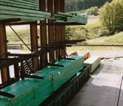
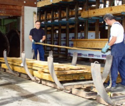

Technische Schutzmaßnahmen
Für frisch imprägnierte Hölzer müssen geeignete Abtropfbereiche eingerichtet werden, z.B. Regale über der Tränkanlage oder Abtropfwannen.
Erst nach vollständigem Abtropfen der überschüssigen Imprägnierlösung darf das Holz zu anderen Lagerplätzen auf dem Betriebsgelände transportiert werden.
Für frisch imprägnierte Hölzer sowie Hölzer, die mit nichtfixierenden Holzschutzmitteln behandelt wurden, müssen befestigte und undurchlässige Lagerflächen ausreichender Kapazität eingerichtet werden. Diese Lagerflächen müssen überdacht sein.
Organisatorische Schutzmaßnahmen
Aus Umweltschutzgründen dürfen Hölzer, die mit fixierenden Holzschutzmitteln behandelt wurden, erst nach Ablauf der Fixierzeit der freien Bewitterung ausgesetzt werden. Hölzer der Gebrauchsklassen 3 und 4 dürfen erst nach abgeschlossener Fixierung des Schutzmittels ausgeliefert werden. Hinweise zu den Fixierzeiten gibt das Technische Merkblatt des jeweiligen Holzschutzmittels.
Persönliche Schutzmaßnahmen
Werden frisch imprägnierte Hölzer – vor allem tropfnasse Hölzer – von Hand umgeladen oder gestapelt, müssen Chemikalienschutzhandschuhe aus Nitril getragen werden – siehe auch „Persönliche Schutzmaßnahmen“ bei den verschiedenen Einbringverfahren. Normale Arbeitshandschuhe, z.B. aus Leder, sind ungeeignet, weil sie vom Holzschutzmittel durchtränkt werden können.
Bei der spanenden Bearbeitung imprägnierter Hölzer muss berücksichtigt werden, dass in den Stäuben und Spänen auch die Holzschutzmittel enthalten sind. Bei der Anwendung chromathaltiger Holzschutzmittel ist daher bis zum Abschluss der Fixierung mit krebserzeugenden Chrom(VI)-Verbindungen zu rechnen. Bei der Anwendung borhaltiger Holzschutzmittel enthalten die Stäube Borverbindungen, die als beeinträchtigend für die Fortpflanzungsfähigkeit und als fruchtschädigend für den Menschen angesehen werden (Reproduktionstoxisch Kategorie 2).
In diesem Fall ist zur Vermeidung von Gesundheitsschäden während der Bearbeitung geigneter Atemschutz (mindestens Partikelfilter FFP2 nach DIN EN 143) zu tragen.